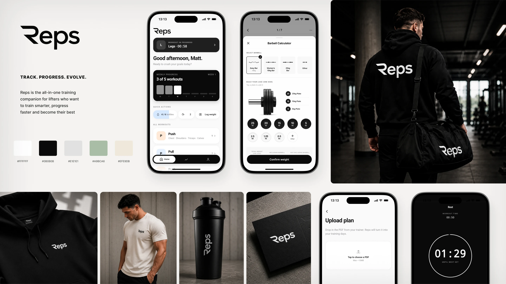
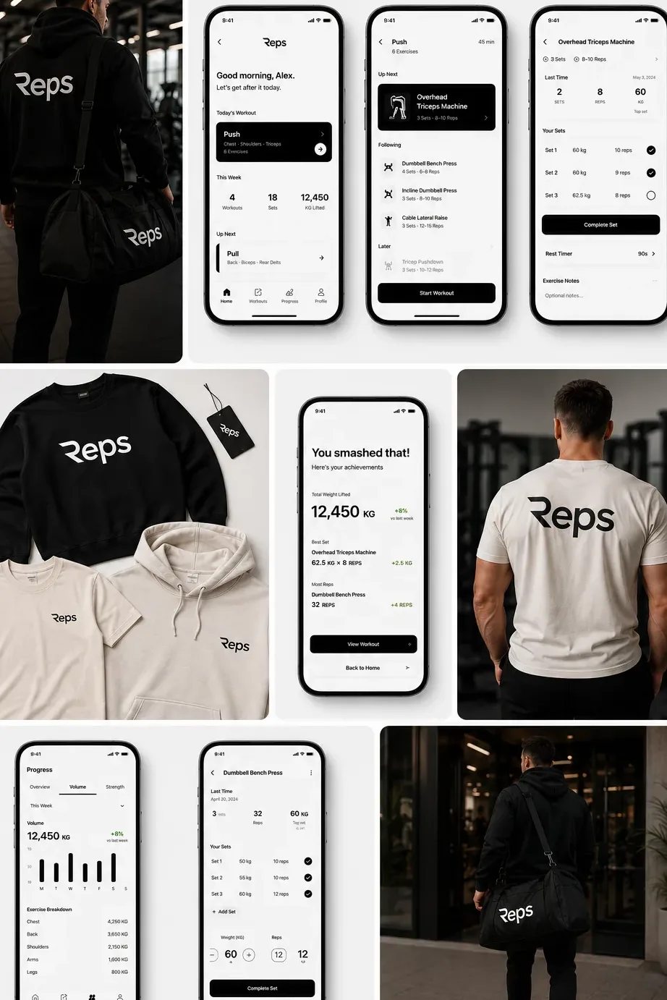
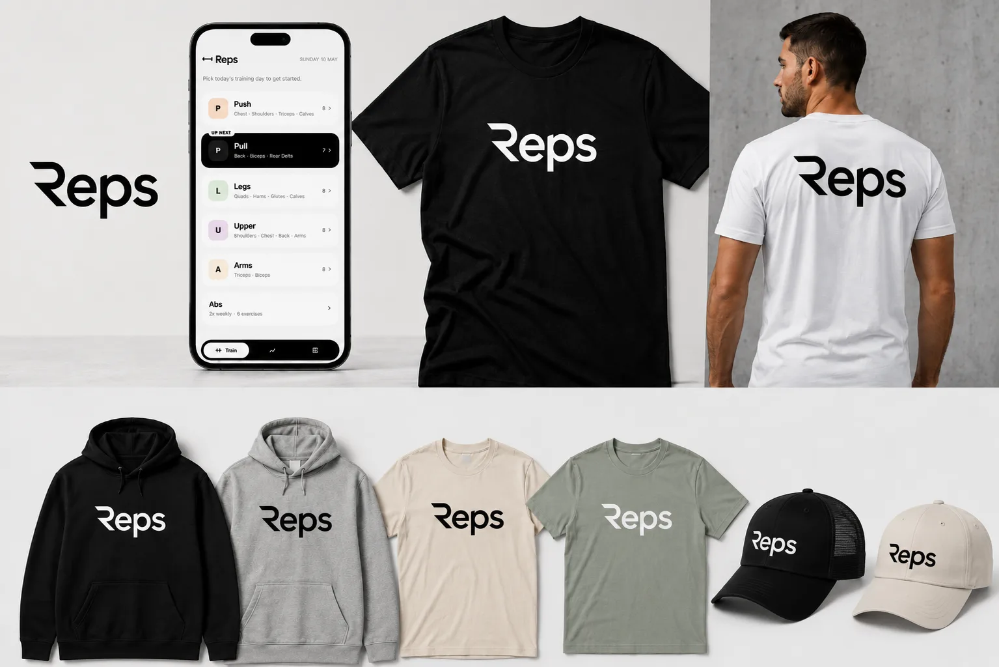

A training app I designed and built for myself. Started as a fix for my own broken workflow — turned into something I use every day.

Training's part of my routine. I've worked with a personal trainer for four years and we've built a programme that works — consistency and tracking are the whole game. What's always annoyed me is the tooling. Every block starts the same way: a PDF plan lands, gets pasted into a Google Doc, columns tidied, dates added, numbers updated session after session. Every few months a new plan arrives and you start over. After four years of that, I built the fix.
No brief. No client. Just the app I always wished existed — built around how I actually train, not how someone in a strategy deck thinks people train.
AI has made bits of it easier. It still wasn't good.
A web app. Lives on my phone like a native one — saved to the home screen, opens in a tap. New plan arrives, I upload the PDF or CSV, and the app reads it, splits it into days, and lays the week out properly.
Then it gets out of the way.
I've spent enough years inside gym apps to know what I don't want from one. Most of them feel like they were built by someone who's never actually used them. Too rigid. No drop sets without three taps and a menu. Supersets buried. You can't just do the workout.
So I built every flexibility I've ever missed:
It's an app built by someone who actually uses it. Imagine that.
The feedback loop
While using the app daily, I capture what needs fixing. What's clunky. What's missing. Sometimes a feature request, sometimes "this interaction feels wrong."
I dump those notes into Claude Plan, let it map out the solution strategy. If it's a backend fix or logic problem, Claude executes it directly into Claude Code → GitHub → Supabase → ship. Done the same day.
When design is needed
If it's a visual or interaction problem, I sketch a quick wireframe in Figma, throw it into ChatGPT image generation to explore options, then export that output at the correct artboard size into Claude Code as a starting point.
Once the working prototype is solid, I export custom PNGs at production size — glossy barbells, shiny plates with actual depth and shine — things that elevate it from "quick dirty rectangles with semi-rounded corners" to "actually polished."
The speed
Most iterations ship the same day. Some don't need design at all. Some are just code fixes. Some need the full flow from wireframe → generated image → prototype → assets. The right tool for the right job, every time.
It's been a solid learning experience on the backend side too — GitHub workflows and Supabase especially have leveled up how I think about data and infrastructure.


Right now it's mine. Works for me, fits how I train, solves the thing I've been meaning to fix for years.
The plan is to open it up. Build a proper site around it. A free tier that covers the basics — log a session, track a plan, see your progress. A paid tier (subscription or one-off) for the advanced stuff: PDF/CSV import, custom set structures, longer-term progress views, anything else my voice notes keep flagging.
No timeline. No pressure. It earns its keep every time I open it — anything beyond that is upside.
Previous project
Next project